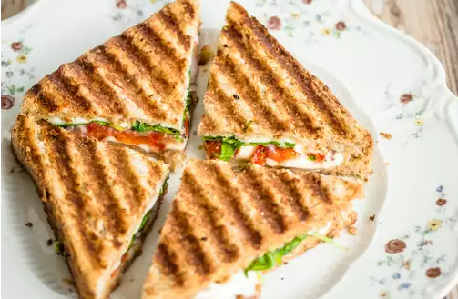

BBQ Grilled Sandwich

Crispy Cheesy Smoky Craving for an authentic Bombay Grilled Sandwich
Try this super easy sandwich recipe that you can easily make at home. This loaded sandwich recipe can be given in
your kid's tiffin or even you can pack it for your office.
Ingredients
- 2 slices brown bread
- 1 handful mint leaves
- 2 pinches salt
- 1 small tomato
- 1 medium boiled potato
- 1/4 teaspoon chaat masala
- 1/4 cup water
- 1 handful coriander leaves
- 2 green chilli
- 1 medium cucumber
- 1 small onion
- 2 tablespoon butter
- 2 wedges cheddar cheese
Steps
- Slice the veggies
- Make green chutney
- Assemble the sandwich
- Grill the sandwich and serve hot